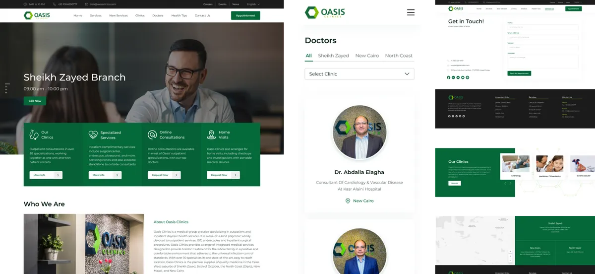
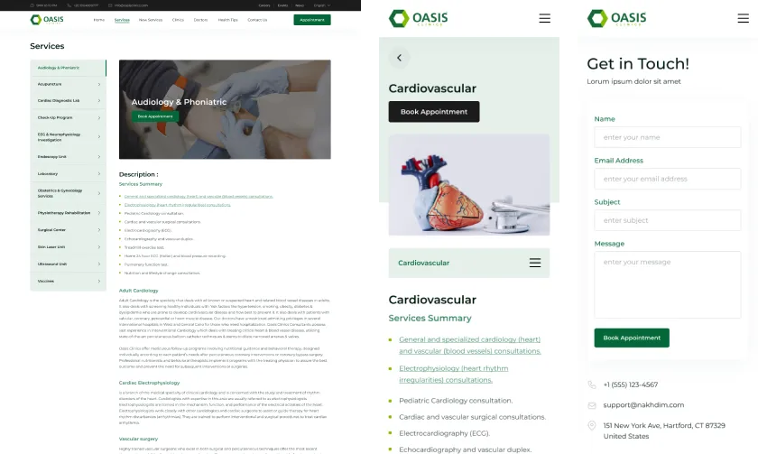
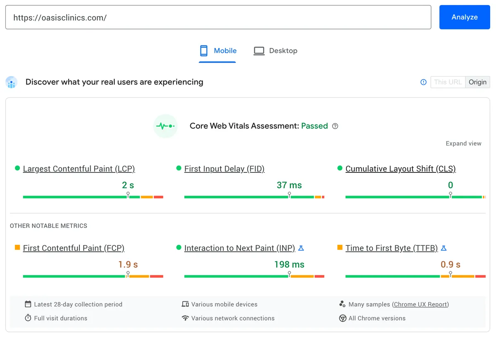

The client
Oasis Clinics is a medical group in Egypt. It has run outpatient and day-surgery services since 2010, with more than 30 specialties across clinics in Sheikh Zayed, New Cairo and the North Coast.
Patients needed to find the right clinic and doctor and book an appointment online. A slow, badly built site gets in the way of that. This was a BugleLab project, the web agency I ran at the time.
The problem
Their old WordPress site was slow and didn't reflect the quality of the clinics. The previous developers had tried to build a custom PHP admin system so staff could update the site themselves. It never worked. Oasis wanted a full redesign and rebuild.
The build
Ihsan, our UX and UI designer, produced the designs as a proof of concept. Once they were approved, we built the site.
- Editing: Forestry.io as the content management system, so staff can update clinics, doctors and services without a developer.
- Booking: appointment requests go through Netlify Forms. Each one is passed through Zapier into a Google Sheet that staff share, so no booking gets lost in an inbox.
- Speed: built with Hugo and plain JavaScript instead of jQuery and plugins. Hugo also resizes and compresses every image at build time.


The results
Based on real visitors over 28 days, the site passed Google's Core Web Vitals assessment on mobile. The main content loaded in 2 seconds and nothing jumped around as the page loaded.

Halfway through the project, the previous developers took the old site down. We had planned to carry its content across, and suddenly there was nothing to copy. Ihsan's designs carried it. The lesson: always take a backup before you start, even if it's only screenshots.
What they said
Andrew and his team have been the best freelancers I've ever worked with. They were very accommodating to some changes in the project plan mid-stream. All in all, very communicative, met deadlines and took very challenging requirements in the web-app-like components as interesting problems that can be solved/engineered away. They are working with the latest web development stacks, which I highly recommend for anyone looking to build something fast/responsive website that lasts without having to do much maintenance. You hardly find professionals like that. I am definitely working with them on my next project.
— Mai Azbak, Marketing Director, Oasis Clinics